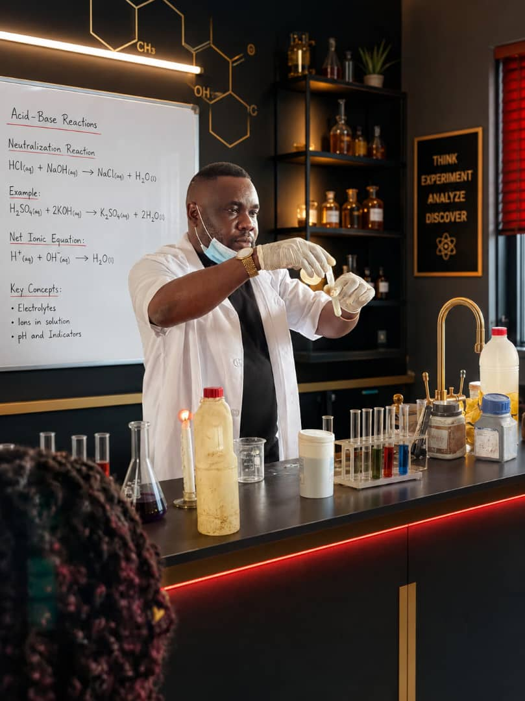

☰
Professional overview of teaching experience, curriculum expertise, and academic approach.

With years of experience in both online and offline tutouring, we provide quality academic guidance for students preparing for WAEC, JAMB,IGCSE, and other British curriculum examinations.
Comprehensive preparation for British curriculum examinations.
Flexible learning options tailored for student.
Focused coaching for WAEC,JAMB, and international exams.
Our teaching approach focuses on building confidence, critical thinking, and long-term academic excellence through personalized guidance and practical engagement.